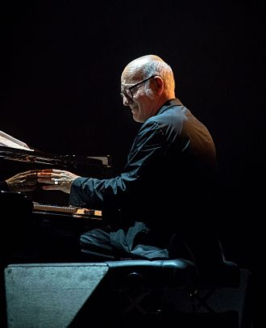
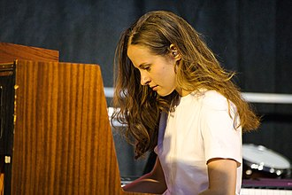
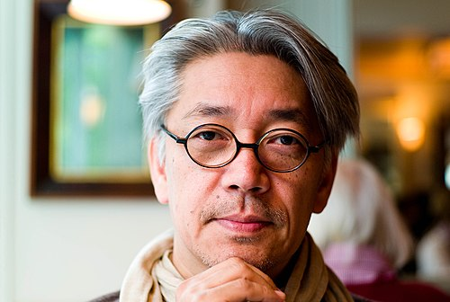
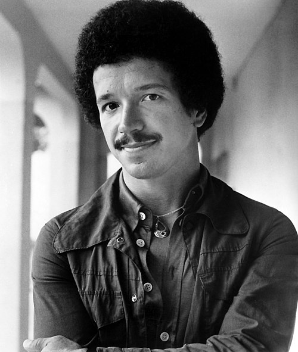

Discovering the Piano Anew: Four Pianists Who Changed the Way I Listen
Introduction
When I first sat down at the piano, I wasn’t prepared for how deeply it would reshape my listening habits. Learning to play—even at the most basic level—tunes your ear differently. Suddenly, each note becomes a decision, each silence a statement. In searching for inspiration beyond the standard classical repertoire, I stumbled into a world of pianists whose music felt immediate, personal, and transcendent. These artists didn’t just play the piano—they told stories with it. Ludovico Einaudi, Hania Rani, Ryuichi Sakamoto, and Keith Jarrett have each left a distinct impression on me, and I’d like to share what I’ve learned about them—and from them.
Ludovico Einaudi: Minimalism That Speaks Volumes
Biography
Born in Turin, Italy in 1955, Ludovico Einaudi was steeped in music from an early age—his mother was a pianist and his grandfather was Italy’s president, Luigi Einaudi. He trained at the Conservatorio Verdi in Milan and later studied under avant-garde composer Luciano Berio. Though rooted in classical tradition, Einaudi diverged early from the path of high modernism, forging his own voice in minimalism. Over time, his accessible and emotionally charged style made him a global phenomenon. His albums like Divenire and In a Time Lapse have charted across Europe, and his music has featured in numerous films and documentaries.
His Music
Einaudi’s piano works are deceptively simple—built on repeating motifs, gentle harmonies, and delicate shifts in dynamics. Listening to pieces like “Nuvole Bianche” or “Experience” feels like watching time stretch and contract. He uses space masterfully; the silences between notes carry as much weight as the notes themselves. As a beginner pianist, I found his work inviting—it encouraged expression over technical fireworks. His music evokes a sense of nostalgia and emotional clarity, making it both meditative and cinematic.
My Favorite Discs
- Una Mattina
- Islands
- Elements
My Favorite Live Performances
You can see Ludovico Einaudi doing a life performance at the Tiny Desk Series
Hania Rani: Contemporary Atmospheres with Classical Depth
Biography
Hania Rani, born Hanna Raniszewska in 1990 in Gdańsk, Poland, studied music in Warsaw and Berlin. A classically trained pianist and composer, she initially performed in the neoclassical duo Tęskno and began solo work that blurs the lines between classical, electronic, and ambient genres. Rani’s international breakthrough came with her 2019 debut solo album Esja, recorded largely at home on a single grand piano. Since then, she has toured globally and expanded her sound, incorporating vocals and live electronics while retaining her core voice at the piano.
Her Music
Rani’s music is intimate and introspective, often unfolding like a conversation. Her compositions typically layer subtle textures—reverb-soaked piano lines, whispered vocals, ambient field recordings—to create emotionally vivid soundscapes. “Glass” and “Leaving” are standout tracks that reveal her talent for marrying structure with spontaneity. As someone new to the piano, I find her touch incredibly expressive—soft yet articulate. Rani’s pieces invite you not just to play, but to listen—to the room, to your breath, to the moment.
My Favorite Discs
- Esja
- Home
- Ghosts
My Favorite Live Performances
There is a very captivating life performance of her in the studio S2
Ryuichi Sakamoto: A Sonic Explorer Across Borders
Biography
Ryuichi Sakamoto was born in Tokyo in 1952 and passed away in 2023, leaving behind a legacy that spanned five decades and countless genres. Trained in both ethnomusicology and classical composition, he first gained fame as a member of Yellow Magic Orchestra, a pioneering electronic group. But his solo career took him in myriad directions: from lush film scores (The Last Emperor, Merry Christmas, Mr. Lawrence) to glitchy electronic collaborations, to deeply personal piano albums in his later years. A vocal activist and environmentalist, Sakamoto was as intellectually rigorous as he was emotionally resonant.
His Music
Sakamoto’s piano works are often sparse yet profoundly moving. Albums like async and Playing the Piano distill his immense range into quiet, contemplative moments. His music embraces imperfection—the creak of a stool, the breath between phrases—and this rawness gives it life. In pieces like “Energy Flow” and “Amore,” his playing feels like a meditation on memory and time. As I explore the piano myself, I’m drawn to his approach: emotionally rich but never overindulgent, always aware of the space around the notes.
My Favorite Discs
- Playing the Piano 12122020
- Esperanto
My Favorite Live Performances
There is a nice recording of him playing in a studio shortly before died. It is called Opus
Keith Jarrett: The Improvisational Master
Biography
Keith Jarrett, born in 1945 in Allentown, Pennsylvania, is one of the most revered improvisational pianists of the 20th and 21st centuries. Classically trained and a former sideman for jazz giants like Miles Davis, Jarrett forged a unique path that brought classical discipline to jazz spontaneity. He’s perhaps best known for The Köln Concert, an entirely improvised performance recorded live in 1975, which became one of the best-selling solo piano albums of all time. Jarrett’s career spans both solo and ensemble work, marked by intense creativity and perfectionism.
His Music
Jarrett’s playing is instinctive and often ecstatic. In improvisational concerts, he enters a trance-like state, allowing melodies to flow without preconception. Pieces from The Köln Concert feel like spiritual journeys—he begins with a fragment and lets it evolve organically. What astonished me as a listener (and aspiring player) is how fully formed his ideas sound, despite being improvised. Jarrett shows what’s possible when technique and intuition merge. His music challenges me to be more present, to trust the process, and to embrace the unpredictable nature of creativity.
My Favorite Discs
- The Köln Concert
- Sun Bear Concerts
Conclusion
These pianists have taught me that music is a journey, not just a destination. They’ve shown me the power of simplicity, the beauty of imperfection, and the magic of improvisation. As I continue to explore the piano, I’m grateful for their influence and inspired by their examples.